Tutorial de Instalação do Modpack PTBRCRAFT
Olá a todos, aqui é o Moide. Agora temos um modpack oficial para nosso servidor.
No nosso modpack existem personalizações e melhorias exclusivas, então para acessar você terá que instalar o modpack do PTBRCRAFT.
Nesse modpack, os mods são baseados em aventura, combate RPG e alguns tons de automatização, principalmente seguindo a linha steampunk.
Se você quer convidar seus amigos, não tem problema, só veja o último tópico de como entrar no servidor.
Nosso modpack é Minecraft Java Edition 1.20.1 - NeoForge.
Downloads Necessários:
Para instalação, você precisa ter o Java instalado.
Baixar JavaSe você não possui o launcher original, ou prefere uma opção open source da comunidade, use o SKLauncher:
Baixar SKLauncherVerifique se o adblock está desligado, desative para apoiar o projeto.
Nota: não utilizar TLauncher. É comprovadamente spyware.
Você deverá baixar o modpack:
- Baixar versão leve (mínimo de 4 GB de RAM) => link no drive
- Baixar versão pesada (recomendado 8 GB de RAM e placa de vídeo) => link no drive
Ambas as versões entram no servidor normalmente. A diferença principal é que uma traz configurações mais leves e a outra inclui shaders.
Para acessar o servidor, você também precisará do Radmin VPN:
Baixar Radmin VPNInstalação - Launcher Original
Com o launcher instalado, baixe o NeoForge e instale na sua máquina:
Baixar instalador NeoForge (auto-download)- Após instalar o NeoForge, no launcher clique na aba Instalações.
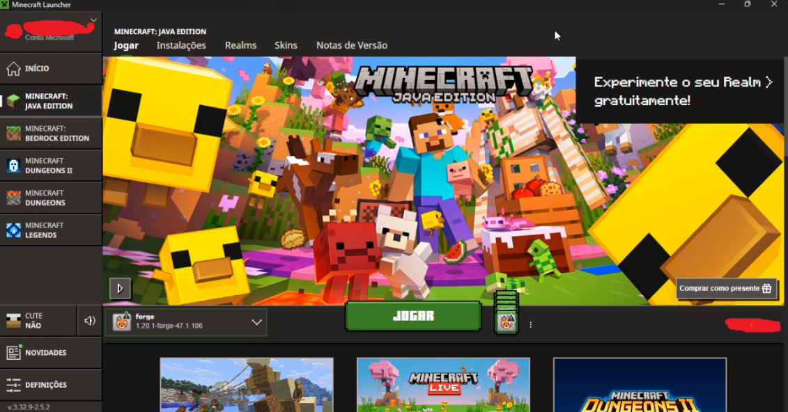
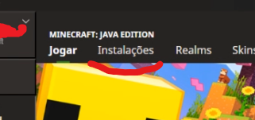
- Entre em Instalações e crie uma nova instalação, ou edite a já existente com nome semelhante a forge-1.20.1-47.1.106.
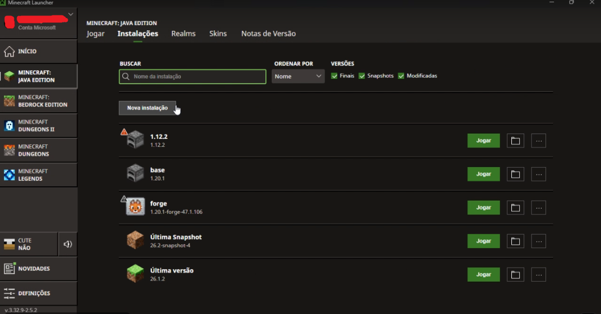
- Confirme a versão correta.
- Baixe o modpack, descompacte em uma pasta qualquer e, no campo de diretório do jogo, selecione essa pasta descompactada.
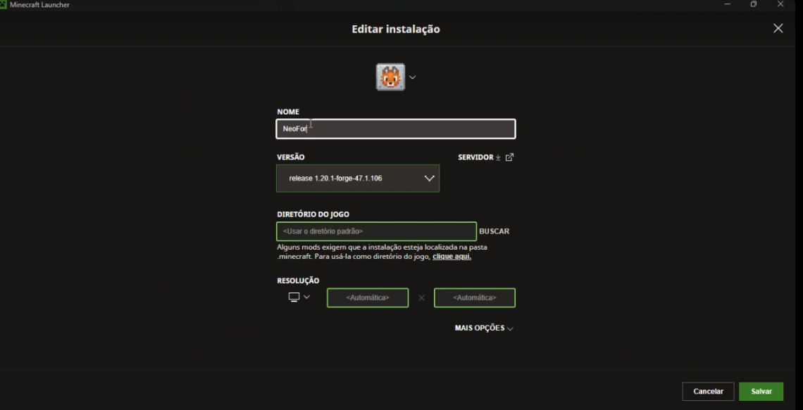
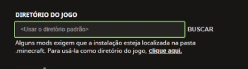
Na tela de configuração você também pode ajustar a RAM. Se estiver tudo certo, ao iniciar vai abrir direto no modpack PTBRCRAFT.
Instalação - SKLauncher
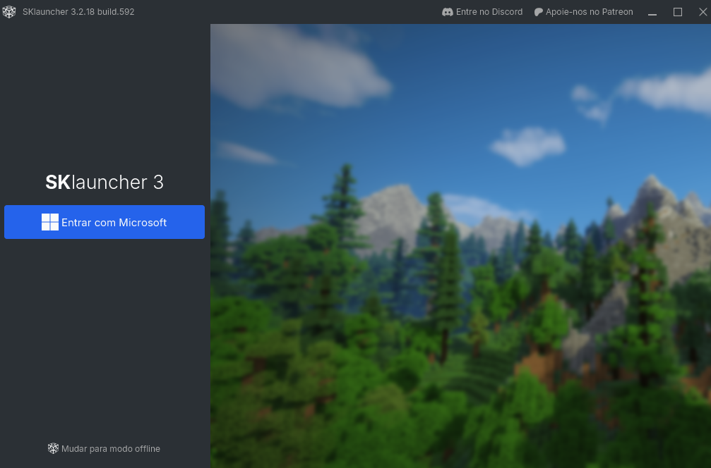
- Entre com sua conta Microsoft, ou em Entrar offline para jogar em servidores que aceitam modo offline, como o nosso.
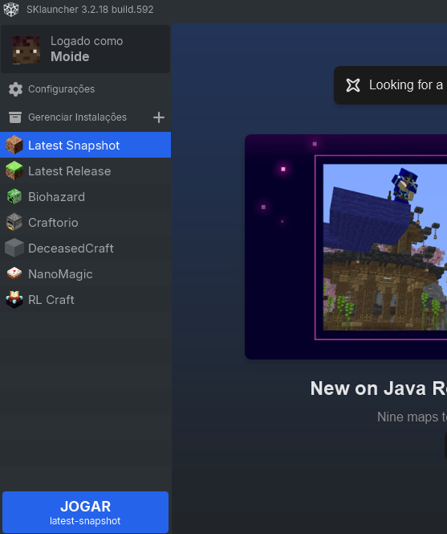
- Crie um novo perfil.
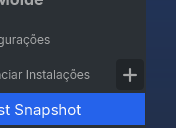
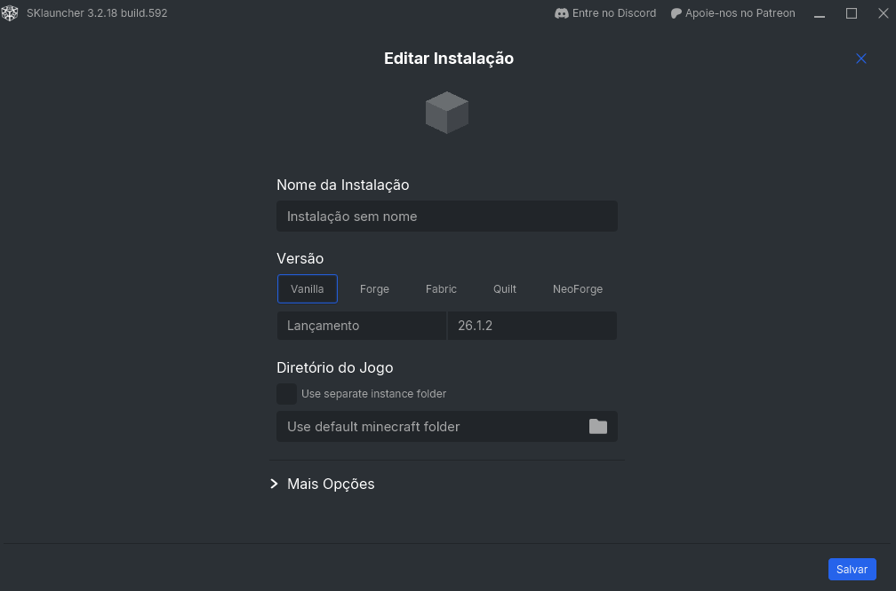
- Em versão, selecione NeoForge - 1.20.1 - última versão.
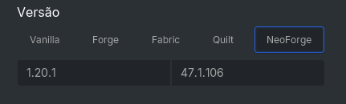
- No diretório do jogo, aponte para a pasta onde você descompactou o modpack.
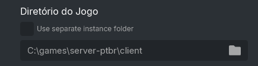
Se quiser, ajuste a RAM em opções avançadas. Depois salve o perfil, selecione na tela principal e inicie. O PTBRCRAFT abrirá normalmente.
Como Entrar no Servidor
Com o modpack instalado, para acessar o servidor você deve estar na rede ptbrcraft no Radmin.
Para isso, peça a senha ao Moide ou a alguém que já joga. Sempre avise quem vai jogar para facilitar o suporte e ajustes no servidor quando necessário.
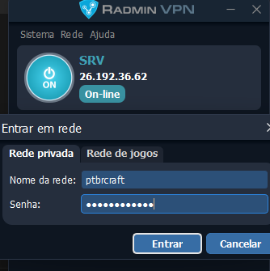
Entrou na rede? Agora é só abrir o jogo e entrar no servidor.
Servidor tá off? Fala com moide que vai ligar de volta. O propio host é o computador dedicado do moide kk, 100% dedicado a hospedar o modpack PTBRCRAFT.
Regras Básicas
- Não pode cheat.
- Não pode crime.
- Seja respeitoso com os outros jogadores.
Pode RP? Pode.
Vá com calma e, de preferência, usem o chat integrado do servidor para conversarmos.
Te esperamos lá.